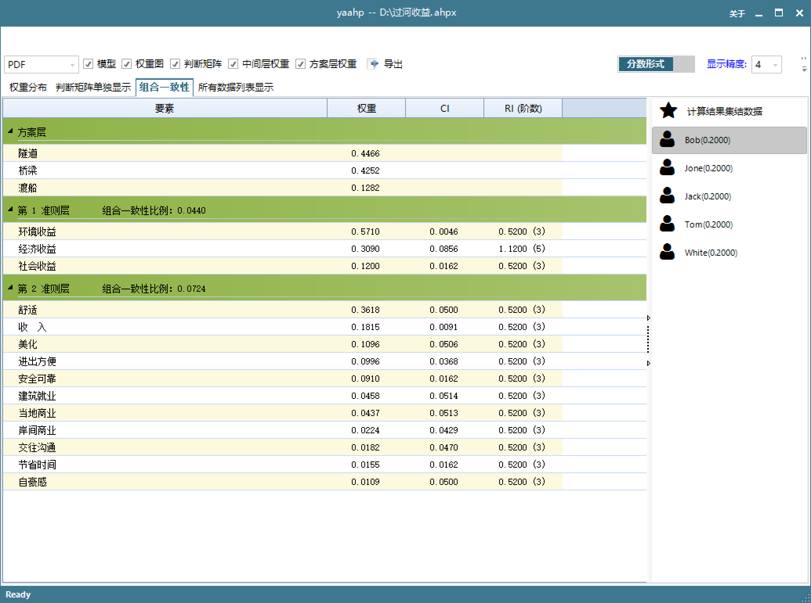
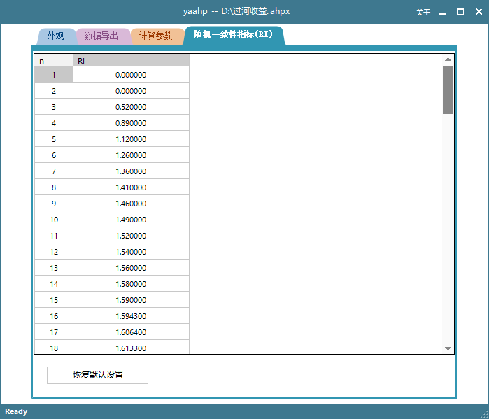
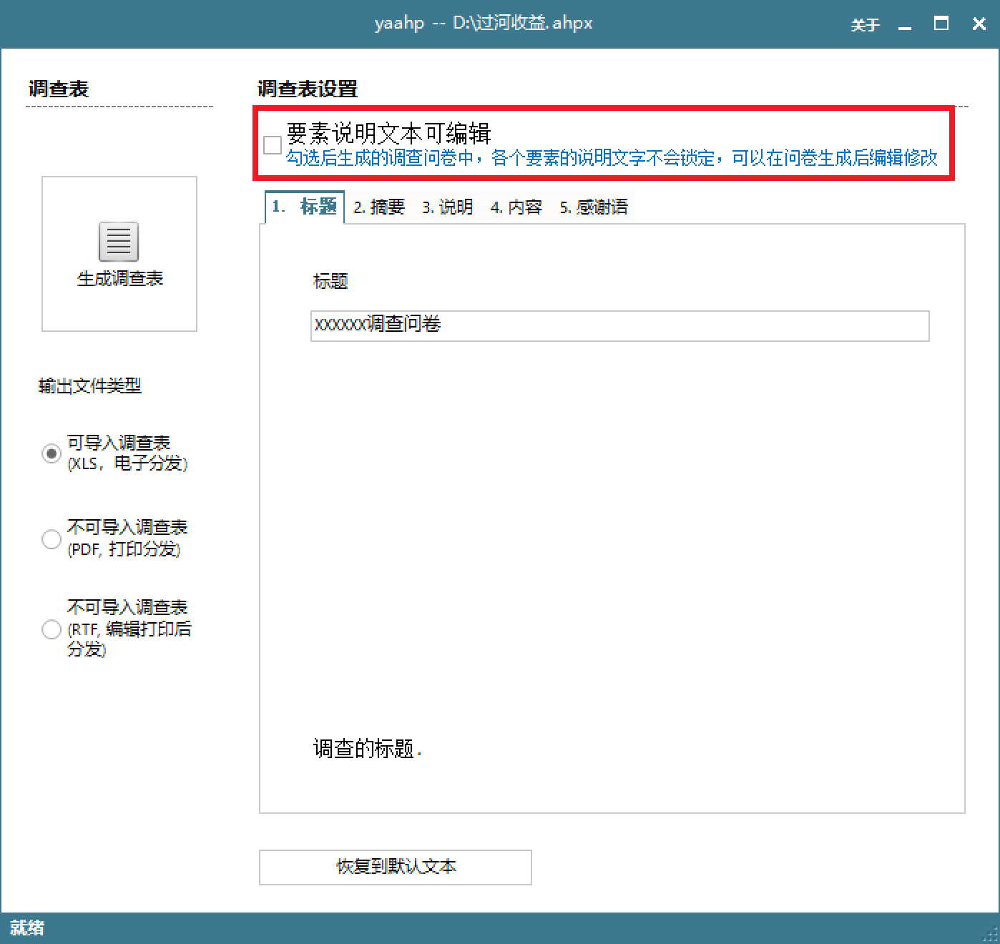
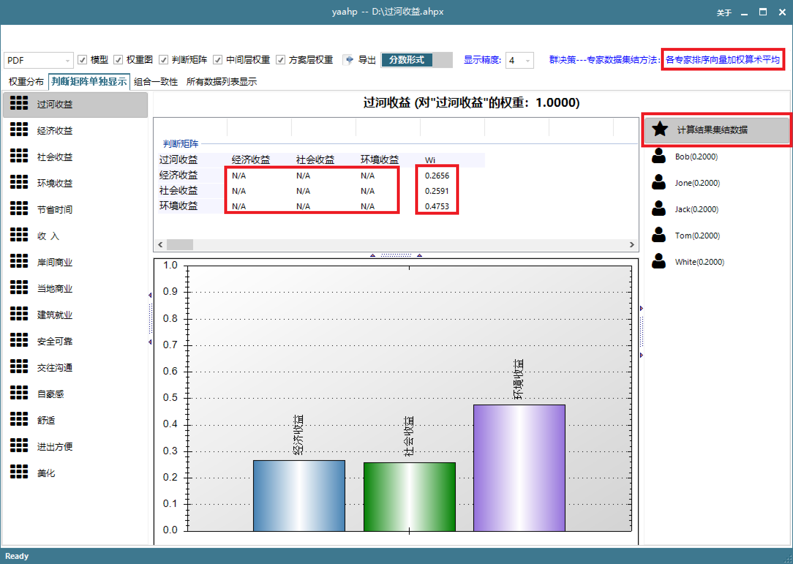
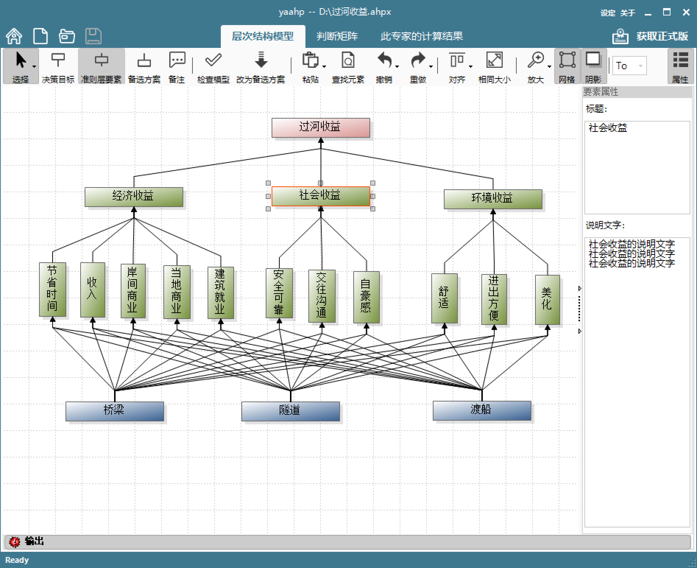
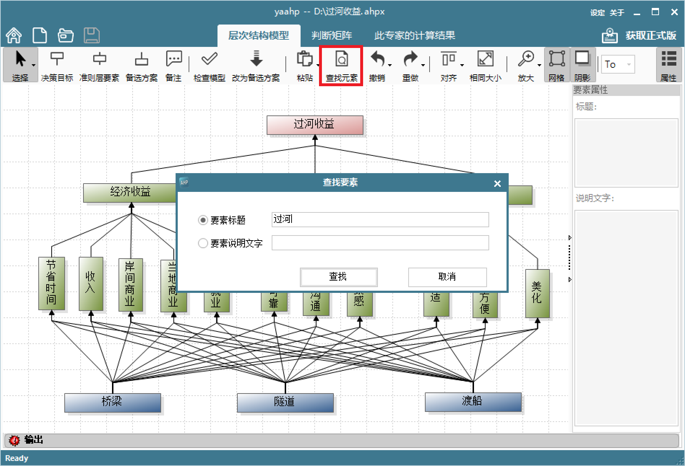
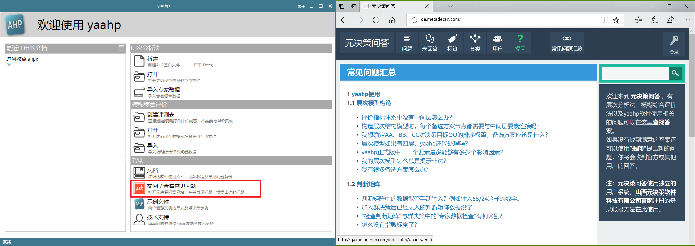
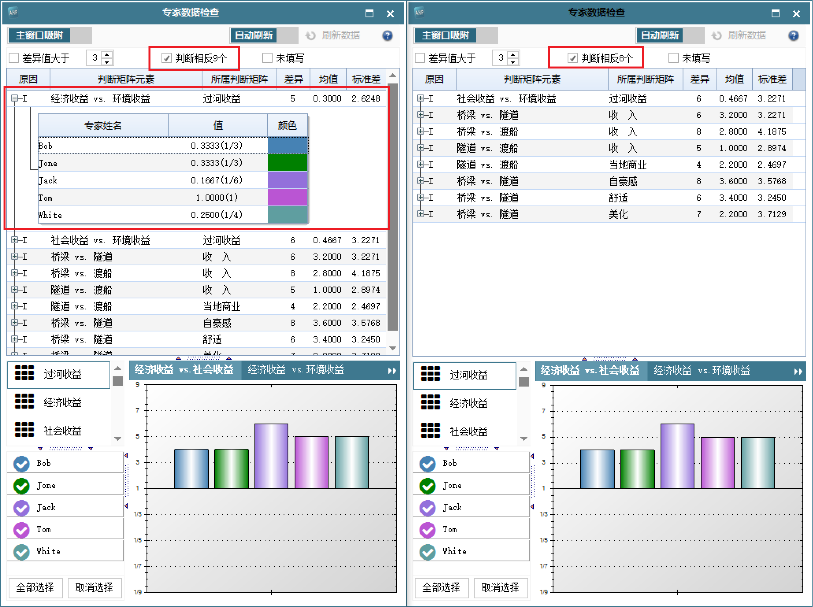
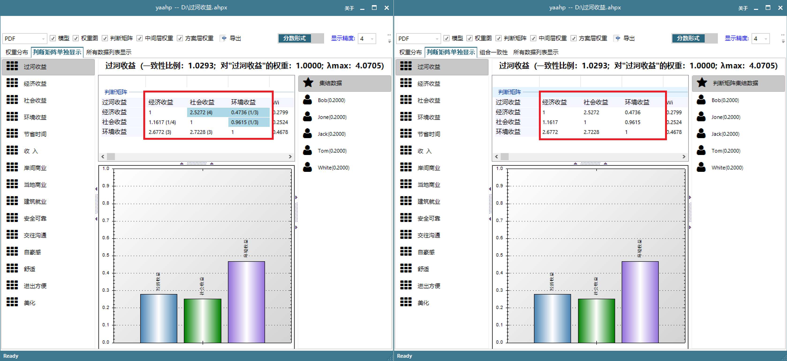

概述
yaahp V11.3 修复两处严重错误Bug、多处其它Bug，并新增和改进多个用户反馈中需求的功能特性。
建议所有用户升级！ 下载yaahp正式版用户下载V11.3 Setup 安装升级后，再次输入序列号即可。
## 新增功能介绍
1. 新增：计算结果详细数据中，增加各准则层组合一致性数据的展示。对于群决策计算结果，可以展示集结数据和各专家的组合一致性数据；
2. 新增：随机一致性指标RI可以在选项中进行设定，并可以重置为默认值；

3. 新增：生成AHP调查问卷及和FCE评测表时，可以选择说明文字是否锁定，如果不锁定则用户可以编辑生成问卷/评测表中的要素/评价指标说明文字，可编辑的说明文字单元格背景颜色为白色；

4. 新增：计算结果集结的群决策计算详细结果中，也显示集结后的数据，所显示判断矩阵只显示各要素的wi，不显示判断矩阵内容（因为计算结果集结没有集结后的判断矩阵）；

5. 新增：层次模型编辑器中，右侧增加要素属性窗口，如果选中了一个要素，属性窗口中显示该要素的文本和说明文字，方便修改。该属性窗口可以通过点击工具栏相应按钮隐藏或显示；

6. 新增：层次模型中根据要素文本或要素说明文字查找要素的功能，查找后将选中满足条件的要素；

7. 新增：软件快速功能窗口增加提问/常见问题按钮，点击后会打开元决策问答网站，可以在这里查询问题解答或提出问题。

## Bug修复说明
### 两处严重错误：
* 修正：群决策数据专家数据检查时，应当只有在不同专家判断跨越同等重要(1)的比较等级情况下才认为“判断相反”。现在同等重要(1)与小于1的重要性等级也被认为“判断相反”；
对同一个“过河收益”案例存盘文件数据，下图左侧为V11.2的群决策专家数据检查结果，可以看出第一组数据被错误地认为“判断相反”（也就是各个专家对一个两两比较给出了相反的意见）。作为对比的下图右侧V11.3中不会再将此项数据认为“判断相反”。

- 修正：群决策判断矩阵集结计算结果中，集结后的判断矩阵数据数据显示错误的bug。该bug将第一个专家的对应数据错误地显示为集结后数据的未修正数据，从而使集结后的判断矩阵看起来被修正过，而实际计算中判断矩阵集结后的数据是不进行修正的（各个专家数据在集结前会修正）；

其他的bug修复：
- 修正：当模型非常大时，生成AHP调查问卷失败的bug；
- 修正：当模型中存在特殊连接结构时，如果存在不一致判断矩阵并未标记为自动修正，在判断矩阵窗口下方的错误信息窗口中双击错误信息定位到相应判断矩阵时软件失去响应的bug；
- 修正：文本修改：”中间层要素”改为”准则层要素”。以及其他多处错误或不够明确的提示信息文本；
- 修正：模型编辑时，复制粘贴要素并没有复制要素的说明文本。
功能改进
- 修改：为AHP调查问卷中的调查表“需要开启宏”提示和演示链接单元格增加超链接，点击该单元格可以在浏览器中打开调查表使用演示页面；
- 修改：判断矩阵页面默认不显示要素说明文本，但增加明显的”显示/隐藏要素说明文本”按钮（之前只能通过双击拖动条上下方的要素文本切换显示和隐藏说明文字）；
- 修改：层次模型绘图板的缩小和恢复原始尺寸移至放大按钮的子按钮中，进一步利用工具栏空间；
- 修改：租用版不再显示“转移使用授权”，避免由于误操作导致使用授权无效。
- 修改：生成的AHP和FCE可导入问卷中，改进描述文本，使含义更明确（姓名、单位等后面加个冒号）；
- 修改：存盘文件中的模型截图质量降低为80%、尺寸降低到60%；
- 修改：层次模型绘制界面工具栏中，将阴影复选框改为统一风格的Checkable按钮，并调整工具栏按钮组合和顺序；
- 修改：软件卸载时不再卸载正式版使用授权文件，这样在重新安装软件后不再需要重新输入序列号或导入使用授权文件。
完整的Changelogs列表
V11.3 2018-02-27
- 新增：计算结果详细数据中，增加各准则层组合一致性数据的展示。对于群决策计算结果，可以展示集结数据和各专家的组合一致性数据；
- 新增：随机一致性指标RI可以在选项中进行设定，并可以重置为默认值；
- 新增：生成AHP调查问卷及和FCE评测表时，可以选择说明文字是否锁定，如果不锁定则用户可以编辑生成问卷/评测表中的要素/评价指标说明文字，可编辑的说明文字单元格背景颜色为白色；
- 新增：计算结果集结的群决策计算详细结果中，也显示集结后的数据，所显示判断矩阵只显示各要素的wi，不显示判断矩阵内容（因为计算结果集结没有集结后的判断矩阵）；
- 新增：层次模型编辑器中，右侧增加要素属性窗口，如果选中了一个要素，属性窗口中显示该要素的文本和说明文字，方便修改。该属性窗口可以通过点击工具栏相应按钮隐藏或显示；
- 新增：层次模型中根据要素文本或要素说明文字查找要素的功能，查找后将选中满足条件的要素；
- 新增：软件快速功能窗口增加提问/常见问题按钮，点击后会打开元决策问答网站，可以在这里查询问题解答或提出问题。
- 修改：为AHP调查问卷中的调查表“需要开启宏”提示和演示链接单元格增加超链接，点击该单元格可以在浏览器中打开调查表使用演示页面；
- 修改：判断矩阵页面默认不显示要素说明文本，但增加明显的”显示/隐藏要素说明文本”按钮（之前只能通过双击拖动条上下方的要素文本切换显示和隐藏说明文字）；
- 修改：层次模型绘图板的缩小和恢复原始尺寸移至放大按钮的子按钮中，进一步利用工具栏空间；
- 修改：租用版不再显示“转移使用授权”，避免由于误操作导致使用授权无效。
- 修改：生成的AHP和FCE可导入问卷中，改进描述文本，使含义更明确（姓名、单位等后面加个冒号）；
- 修改：存盘文件中的模型截图质量降低为80%、尺寸降低到60%；
- 修改：层次模型绘制界面工具栏中，将阴影复选框改为统一风格的Checkable按钮，并调整工具栏按钮组合和顺序；
- 修改：软件卸载时不再卸载正式版使用授权文件，这样在重新安装软件后不再需要重新输入序列号或导入使用授权文件。
- 修正：群决策数据专家数据检查时，应当只有在不同专家判断跨越同等重要(1)的比较等级情况下才认为“判断相反”。现在同等重要(1)与小于1的重要性等级也被认为“判断相反”；
- 修正：群决策判断矩阵集结计算结果中，集结后的判断矩阵数据数据显示错误的bug。该bug将第一个专家的对应数据错误地显示为集结后数据的未修正数据，从而使集结后的判断矩阵看起来被修正过，而实际计算中判断矩阵集结后的数据是不进行修正的（各个专家数据在集结前会修正）；
- 修正：当模型非常大时，生成AHP调查问卷失败的bug；
- 修正：当模型中存在特殊连接结构时，如果存在不一致判断矩阵并未标记为自动修正，在判断矩阵窗口下方的错误信息窗口中双击错误信息定位到相应判断矩阵时软件失去响应的bug；
- 修正：文本修改：”中间层要素”改为”准则层要素”。以及其他多处错误或不够明确的提示信息文本；
- 修正：模型编辑时，复制粘贴要素并没有复制要素的说明文本。